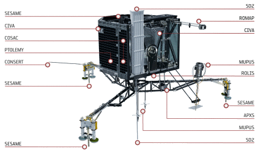
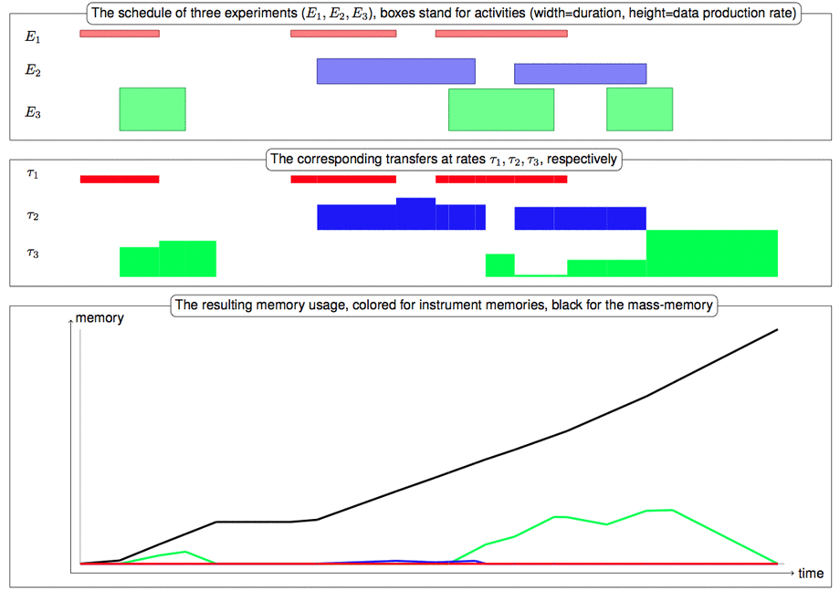

Scheduling activities for Rosetta/Philae
On June 13th 2015, the robot-lab Philae woke up on the comet 67P/Churyumov-Gerasimenko to resume a series of experiments interrupted seven months ago. These experiments were scheduled using Constraint Programming, and researchers of the team ROC developed
propagation algorithms
to help the Scientific Operations and Navigation Centre (SONC) to efficiently achieve this task.
The Rosetta/Philae mission was launched in 2004 and it took more than ten years for the spacecraft, Rosetta, to reach its destination after a 6 billion kilometres long trip. On November 12th 2014, the lander module, Philae, was released and landed on the ground of the comet. Philae is fitted with ten instruments (see Figure 1) to conduct the experiments elaborated by as many research teams across Europe. These experiments, should they be imaging (CIVA, ROLIS), sampling (SD2, COSAC, PTOLEMY) or other types of signal analysis, correspond to sequences of activities constrained by two extremely scarce resources:
The plans executed by Philae are modelled and solved using constraint programming technology. Indeed, Mission Operations Scheduling Tool (MOST), the toolkit used to schedule the lander's activities, was developed by a CNES team based in Toulouse on top of IBM ILOG Scheduler (now IBM CP Optimizer). This framework is very well suited to model the constraints related to instant energy usage of the instruments, using well-known algorithms to reason about cumulative resources. Moreover, in order to model the more specific constraints related to data transfers, several dedicated algorithms were developed by the Operations Research & Constraints group of the LAAS-CNRS lab. This work was published by the Constraints journal [Simonin et al. 15]. Notice that the activities of Rosetta, on the other hand, were handled by a separate team and the NASA largely contributed to MOST's equivalent Rosetta Science Ground Segment Scheduling Component (RSSC), which uses the priority-based scheduling module ASPEN [Chien et al. 13].
Comets are of particular interest because as witnesses of the early age of the solar system, and because that may be the source of a large part of the water in our oceans1 and perhaps at the origin of life on Earth. The European Space Agency therefore launched an extremely ambitious project: The spacecraft Rosetta was set to meet the comet Churyumov-Gerasimenko and orbit it while making a series of observations and measures. Moreover, a robot module attached to Rosetta, Philae, was set to land on the surface of the comet in order to study the composition and properties of its kernel. Because of the extremely long distance from Earth to Rosetta when it reached the comet (about 650 million kilometres) sending instructions takes about half an hour making it impractical and wasteful to send short terms commands. Long term plans, lasting several days, are therefore computed on the ground and sent to Rosetta which transmits them to the lander. New plans can then be uploaded, however only during visibility windows distant of several hours. On November 12th 2014, Philae executed the first of these plans, starting with its release from Rosetta and followed by its descent toward the surface of the comet. During this phase, called SDL for Separation-Descent-Landing a number of activities took place (e.g. imaging from the downward facing camera ROLIS, or the magnetometer ROMAP). The "touchdown" event triggered the second and main phase of the plan, the First-Science-Sequence (FSS). This phase corresponds to the main battery autonomy period and is the only chance for Philae to proceed to the most energy demanding experiments. As we know now, the data from the first experiments (such as CIVA, the panoramic camera) indicated that something went wrong. For instance, the data from SESAME, the acoustic/mechanical probing instruments, later showed that Philae bounced several times before reaching its final location on the comet. It was anticipated that new plans, tailored to the parameters of the exact landing site, such as the visibility of the orbiter (to plan data transfers) or sunshine duration (to plan for imaging activities) or even the landscape. Because of the unexpected turn of events, it was even more critical to upload new plans to Philae. However, because most of the actual landing site parameters were unknown, ESA's operatives took a very conservative approach, sending short and extremely safe sequences of activities, corresponding to plans computed for lower energy levels. The last phase, LTS for Long Term Science, may start once the small solar panels of Philae receive enough energy to charge the secondary batteries, and a strong enough communication link is established with the lander.2 In each phase, the plan executed by Philae were computed by the SONC in Toulouse. Then, they are encoded into machine-readable format by the Lander Control Centre (LCC) in Cologne and then sent to Rosetta via ESA's European Space Operations Centre (ESOC) and one of ESA's Deep Space Antennas in New Norcia, Cabreros or Malargüe. Finally they are transmitted from the orbiter to Philae.
[Simonin et al. 15] G. Simonin, C. Artigues, E. Hebrard, P. Lopez.
Scheduling scientific experiments for comet exploration.
Constraints 20(1), 77-99, 2015↩
[Chien et al. 13] S. Chien, G. Rabideau, D. Tran, F. Nespoli, D. Frew, H. Metselaar, F. Nespoli, D. Frew, H. Metselaar, M. Fernandez, M. Kueppers, L. O'Rourke.
Scheduling science campaigns for the Rosetta mission: A preliminary report.
In Proceedings of the International Workshop on Planning and Scheduling for Space (IWPSS). Moffett Field, CA, March 2013↩
1. Rosetta's findings actually show that the water contained in the comets 67P is not of the same type usually found in our oceans. ↩ 2. At the time of writing, the first condition is met, however not yet the second because of the sublimation of the comet's ice making it difficult for Rosetta to orbit at close enough range.↩ Gilles Simonin, Christian Artigues, Emmanuel Hebrard, Pierre Lopez and Pauline Ballereau, of the Operations Research & Constraints group (ROC).↩
- First, instruments were supplied in energy by the main battery alone, which barely held enough power to keep a low-energy light-bulb lit up during the three days of this first sequence.
- Second, all the data collected by the instruments were stored on a central mass-memory whose capacity is 6MB, that is, about as much as 4 floppy disks.
|  | ||
| Figure 1. Philae's instruments (© ESA/AOES Medialab) |
The plans executed by Philae are modelled and solved using constraint programming technology. Indeed, Mission Operations Scheduling Tool (MOST), the toolkit used to schedule the lander's activities, was developed by a CNES team based in Toulouse on top of IBM ILOG Scheduler (now IBM CP Optimizer). This framework is very well suited to model the constraints related to instant energy usage of the instruments, using well-known algorithms to reason about cumulative resources. Moreover, in order to model the more specific constraints related to data transfers, several dedicated algorithms were developed by the Operations Research & Constraints group of the LAAS-CNRS lab. This work was published by the Constraints journal [Simonin et al. 15]. Notice that the activities of Rosetta, on the other hand, were handled by a separate team and the NASA largely contributed to MOST's equivalent Rosetta Science Ground Segment Scheduling Component (RSSC), which uses the priority-based scheduling module ASPEN [Chien et al. 13].
The Rosetta/Philae Mission
| 67P Churyumov/Gerasimenko by Rosetta's navcam, on December 10th 2014 (© ESA/AOES Medialab) |
Comets are of particular interest because as witnesses of the early age of the solar system, and because that may be the source of a large part of the water in our oceans1 and perhaps at the origin of life on Earth. The European Space Agency therefore launched an extremely ambitious project: The spacecraft Rosetta was set to meet the comet Churyumov-Gerasimenko and orbit it while making a series of observations and measures. Moreover, a robot module attached to Rosetta, Philae, was set to land on the surface of the comet in order to study the composition and properties of its kernel. Because of the extremely long distance from Earth to Rosetta when it reached the comet (about 650 million kilometres) sending instructions takes about half an hour making it impractical and wasteful to send short terms commands. Long term plans, lasting several days, are therefore computed on the ground and sent to Rosetta which transmits them to the lander. New plans can then be uploaded, however only during visibility windows distant of several hours. On November 12th 2014, Philae executed the first of these plans, starting with its release from Rosetta and followed by its descent toward the surface of the comet. During this phase, called SDL for Separation-Descent-Landing a number of activities took place (e.g. imaging from the downward facing camera ROLIS, or the magnetometer ROMAP). The "touchdown" event triggered the second and main phase of the plan, the First-Science-Sequence (FSS). This phase corresponds to the main battery autonomy period and is the only chance for Philae to proceed to the most energy demanding experiments. As we know now, the data from the first experiments (such as CIVA, the panoramic camera) indicated that something went wrong. For instance, the data from SESAME, the acoustic/mechanical probing instruments, later showed that Philae bounced several times before reaching its final location on the comet. It was anticipated that new plans, tailored to the parameters of the exact landing site, such as the visibility of the orbiter (to plan data transfers) or sunshine duration (to plan for imaging activities) or even the landscape. Because of the unexpected turn of events, it was even more critical to upload new plans to Philae. However, because most of the actual landing site parameters were unknown, ESA's operatives took a very conservative approach, sending short and extremely safe sequences of activities, corresponding to plans computed for lower energy levels. The last phase, LTS for Long Term Science, may start once the small solar panels of Philae receive enough energy to charge the secondary batteries, and a strong enough communication link is established with the lander.2 In each phase, the plan executed by Philae were computed by the SONC in Toulouse. Then, they are encoded into machine-readable format by the Lander Control Centre (LCC) in Cologne and then sent to Rosetta via ESA's European Space Operations Centre (ESOC) and one of ESA's Deep Space Antennas in New Norcia, Cabreros or Malargüe. Finally they are transmitted from the orbiter to Philae.
Scheduling under Energy and Memory Constraints
Scheduling the experiments and activities of Philae can be seen as a Resource-constrained multi-project scheduling problem (RCMPSP), however, with additional specific features. Each experiment corresponds to a project, i.e., a sequence of activities themselves decomposed into tasks with precedence constraints. Besides a duration, each task is defined by two other fundamental characteristics: its demand in energy and a data production rate. These two quantities correspond to the usage of two resources, respectively, the instant power delivered by the battery and the memory available in the instruments and in the on-board computer. The first type of resource, standing for the instant power usage, can be easily modelled using standard constraints for cumulative resources (IloDiscreteResource in IBM ILOG Scheduler). The instant power usage is in fact limited on three levels. First, there is threshold for the total instant power usage on the main battery, involving every task. Second, each task is associated to a converter, and each converter has its own threshold. Third, the tasks of a given converter are on a given power line, which also has a threshold. The constraint model therefore involves a hierarchy of cumulative resource constraints with different capacities, and each task requires the resource corresponding to its line, converter, and of course the main battery.
The second type of resource stands for memory available to store the data before its transfer to Rosetta and then to Earth.
Each experiment produces data on its own memory. This data will then transferred
back to Earth through the orbiter acting as a relay.
All transfers are managed by the Command and Data Management System (CDMS) following a
greedy policy. First, priorities are assigned off-line to experiments.
Then, on-line, data are systematically transferred from the
experiment of highest priority with available data to a central mass-memory,
then sent to the orbiter when it is in visibility,
i.e., above the horizon of the comet with respect to Philae.
This transfer policy may lead to data loss when
an experiment produces more data than its memory can store
and its priority is not high enough to allow a transfer to the mass-memory.
This was modelled within the previous release of MOST
using Reservoir constraints:
Data production tasks fill the reservoir, while multiple
pre-defined data transfer tasks of variable duration
empty it.
However, this modeling choice has several drawbacks and it
quickly became apparent that it was the critical aspect of the
problem to tackle in order to find better solutions faster.
In particular, transfer activities are neither known in advance nor controllable since they are triggered by the CDMS following a purely reactive policy. This approach therefore requires making simplifying assumption about data transfer, yielding an inaccurate and inefficient model.
A Global Constraint for Data Transfers
Instead data transfers can be altogether encapsulated into a global constraint. The decision variables are start times of data-producing tasks (data production rate and duration are known in advance) and the priority permutation. This allows to very quickly checking the satisfiability of a schedule with respect to data transfer. Moreover, one can compute bounds allowing to filter out the domains of the variables standing for start time of the data-producing tasks. The CDMS transfers data by blocks of 256 bytes. Its policy is relatively simple and can be described as follows:- Repeat (in parallel):
-
- Scan experiments by order of priority until one with at least one block of data on its memory is found. In that case, transfer one block from this experiment to the mass memory unless the mass memory is full.
- If the orbiter is visible, and there is at least one block of data on the mass memory, then transfer one block from the mass memory to the orbiter
|  | ||
| Figure 3. Illustration of the data transfers onboard Philae. |
Impact on the Mission
This approach reduces the solving time dramatically: from hours in some cases to seconds in all scenarios considered so far by the SONC. Being able to compute and verify plans in a reasonable amount of time was extremely important to SONC operatives, and not only because reactivity of the software is always important to the users. Indeed, if the plan sent to Philae when the operation started was given a relatively comfortable period (once the landing site was chosen) to be computed, other usages of MOST were under tighter time constraints. First, in order to choose the landing site, for instance, several scenarios, corresponding to the different values for the parameters of visibility, sunshine period, etc. had to be solved in a short period. Second, once on the comet, new updated plans, better optimised for the characteristics of the actual landing site and of the situation of Philae are computed under a lot of pressure and time efficiency is of great importance. Moreover, the dedicated algorithms not only helped reducing the computation time, it also allowed a much more accurate verification of the transfers and therefore gave a better guarantee against data loss than the previous approach.[Simonin et al. 15] G. Simonin, C. Artigues, E. Hebrard, P. Lopez.
Scheduling scientific experiments for comet exploration.
Constraints 20(1), 77-99, 2015↩
[Chien et al. 13] S. Chien, G. Rabideau, D. Tran, F. Nespoli, D. Frew, H. Metselaar, F. Nespoli, D. Frew, H. Metselaar, M. Fernandez, M. Kueppers, L. O'Rourke.
Scheduling science campaigns for the Rosetta mission: A preliminary report.
In Proceedings of the International Workshop on Planning and Scheduling for Space (IWPSS). Moffett Field, CA, March 2013↩
1. Rosetta's findings actually show that the water contained in the comets 67P is not of the same type usually found in our oceans. ↩ 2. At the time of writing, the first condition is met, however not yet the second because of the sublimation of the comet's ice making it difficult for Rosetta to orbit at close enough range.↩ Gilles Simonin, Christian Artigues, Emmanuel Hebrard, Pierre Lopez and Pauline Ballereau, of the Operations Research & Constraints group (ROC).↩